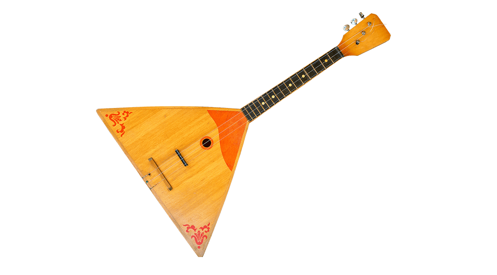

От тюнера до дисторшена
Рок-н-ролл с WebAudio API 🎸
Елифантьев Олег
Тензор, ведущий разработчик
Teamlead, full-stack (TypeScript, Python)
 oelifantiev
oelifantiev
Елифантьев О.Н.
Тензор, ведущий разработчик
Teamlead, full-stack (TypeScript, Python)
oelifantiev
В детстве я хотел научиться играть на гитаре…



WebAudio API — это мощный инструмент для работы с аудио в браузере. Он предоставляет интерфейсы для анализа, обработки и воспроизведения звуковых сигналов в реальном времени.
В основе WebAudio API лежит концепция графа. Это система, состоящая из различных узлов, каждый из которых выполняет свою задачу. Эти узлы можно подключать друг к другу, создавая цепочку обработки звука.
OscillatorNode — генератор волн.AudioBufferSourceNode — воспроизведение аудио cэмплов.MediaElementAudioSourceNode — подключение элемента audio.MediaStreamAudioSourceNode — захват звука с микрофона или другого потока.GainNode — управление громкостью.BiquadFilterNode — фильтрация частот (низкие, высокие, полосовые фильтры).DelayNode — задержка сигнала (эффект эха).WaveShaperNode — нелинейные искажения (овердрайв, дисторшн).ConvolverNode — реверберация с использованием IR.AnalyserNode — анализ частотного спектра и формы волны.AudioWorkletNode — кастомная обработка аудио с низкой задержкой.Финальная точка в аудиографе:
AudioDestinationNode — выход на динамики или другое аудиоустройство.MediaStreamAudioDestinationNode — выход в поток, например для WebRTC.Все аудиопроцессы в WebAudio API происходят внутри AudioContext. Это точка входа для работы с графом узлов. Без контекста узлы не работают!
// Создаём аудиоконтекст
const audioContext = new AudioContext();
Узлы создаются с помощью методов audioContext.createX().
// Создаём узлы, пока не связанные друг с другом
const oscillator = audioContext.createOscillator();
const gainNode = audioContext.createGain();
Узлы соединяются с помощью метода connect().
Например, направим сигнал генератора через узел громкости на динамики:
// Соединяем узлы в граф
oscillator.connect(gainNode);
gainNode.connect(audioContext.destination);
Связь между узлами можно разрывать с помощью метода disconnect().
// Отключаем узел
// Теперь сигнал не дойдёт до динамиков.
gainNode.disconnect();
Гитарный тюнер анализирует звук и определяет частоту ноты. Для этого используется AnalyserNode и алгоритм Быстрое преобразование Фурье (FFT).
AnalyserNode работает в составе аудиографа и позволяет получить данные о звуке в реальном времени.
Может анализировать в двух "областях" — в во временной и в частотной.
Быстрое преобразование Фурье (FFT) — алгоритм, который преобразует аудиосигнал из временной области (колебания во времени) в частотную область (громкость каждой частоты).
Это позволяет определить, какая частота доминирует в звуке — а значит, мы можем узнать, какая нота звучит!
AnalyserNode умеет сам выполнять FFT, чтобы разбить сигнал на частоты.
Можно выбрать разрешение с помощью fftSize.
// Чем выше значение, тем точнее анализ,
// но тем больше вычислений и задержка
analyser.fftSize = 2048;
fftSize — количество отсчетов амплитуды сигнала во временной области, используемых для анализа. Чем больше отсчетов, тем выше частотное разрешение.
Δf = Fs/N
Δf - частотное разрешение, Fs - частота дискретизации, N - количество отсчетов
Обычно, частота дискретизации 44100 Hz. Max значение N в WebAudio - 215 = 32768, min значение - 25 = 32
Наилучшее значение Δf = 44100/32768 = 1.34 Hz
AnalyserNode хранит частотные данные в массиве. Мы можем его обновлять и искать в нём доминирующую частоту.
// Получаем данные о частотах
const buffer = new Uint8Array(analyser.frequencyBinCount);
analyser.getByteFrequencyData(buffer);
Каждый элемент в массиве — значение в децибеллах для определенной частоты. Частоты распределены линейно от 0 до 1/2 частоты дискретизации.
i-й элемент массива соответствует частоте = (Δf * i) Hz, max(i) = fftSize / 2
frequency = index * (sampleRate / fftSize)
// Получаем доступ к потоку
const stream = await navigator.mediaDevices.getUserMedia({
audio: constraints,
});
// Создаем узел
const node = audioContext.createMediaStreamSource(stream);
Важно указать, т.к. иначе браузер будет влиять на аудиопоток
{
echoCancellation: false,
noiseSuppression: false,
autoGainControl: false,
}Бустер — эффект, который увеличивает громкость сигнала без изменения его формы. Он используется для усиления звука перед дисторшеном.
Бустер можно сделать с помощью GainNode, который регулирует уровень сигнала.
// Создаём узел громкости (бустер)
const booster = audioContext.createGain();
// Усиливаем сигнал в 4 раза
booster.gain.value = 4;
Когда звук распространяется, он отражается от стен, пола, потолка, создавая ощущение объёма и глубины. Реверберация — эффект, который имитирует звучание в каком-то выбранном окружении.
В WebAudio этот эффект можно получить с помощью ConvolverNode
ConvolverNode — узел WebAudio API, который позволяет выполнить операцию "свертки" двух
сигналов.
Один из сигналов — получаемые входные данные, другой — фиксированный сигнал, загруженный из файла.
Обычно это т.н. импульсная характеристика (IR, Impulse Response).
Convolve, англ. свернуть, convolution — свертка.
IR — это запись отклика акустической системы (или устройства) на короткий импульсный сигнал. Как их записывают?
Применяя, путем свертки, IR на наш аудиосигнал, на выходе мы получаем как бы наш сигнал звучал в том окружении, в котором был записан IR.
IR есть не только для "помещений" но и для "оборудования". Например, для эмуляции гитарных кабинетов и микрофонов
const convolver = audioContext.createConvolver();
// Загружаем импульсную характеристику
fetch("impulse-response.wav")
.then(response => response.arrayBuffer())
.then(data => audioContext.decodeAudioData(data))
.then(irBuffer => convolver.buffer = irBuffer);
Delay — это эффект задержки звука. Исходный сигнал повторяется с определённой задержкой и постепенно затухает.
Однажды (годах этак в 50-х - 60-х) на студию Sun Records пришли парни из группы Kings of Rhythm (они играли блюз) и сказали что не могут записываться, потому что у них сломался усилитель…
ОВЕРДРАЙВ И ДИСТОРШН: история магического гитарного перегруза
WaveShaperNode позволяет искажать входящий сигнал.
Для задания характеристики искажения используется параметр curve — массив чисел, который определяет функцию преобразования (transfer function), которая определяет изменение входного сигнала.
const waveShaper = audioContext.createWaveShaper();
function makeDistortionCurve(amount) {
let curve = new Float32Array(44100);
for (let i = 0; i < 44100; i++) curve[i] = ...;
return curve;
}
waveShaper.curve = makeDistortionCurve(20);
Елифантьев Олег
Тензор
oelifantiev